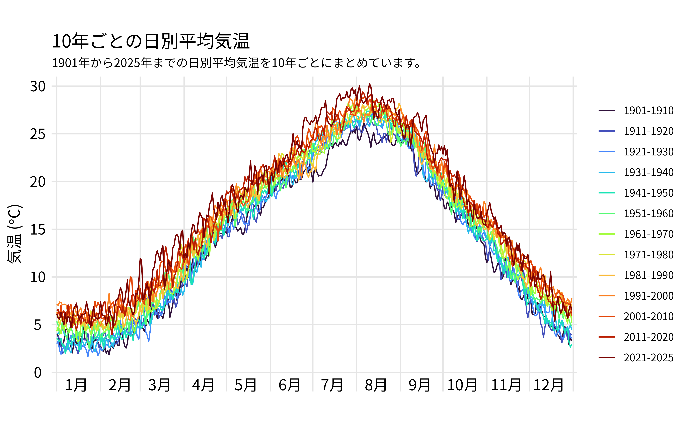
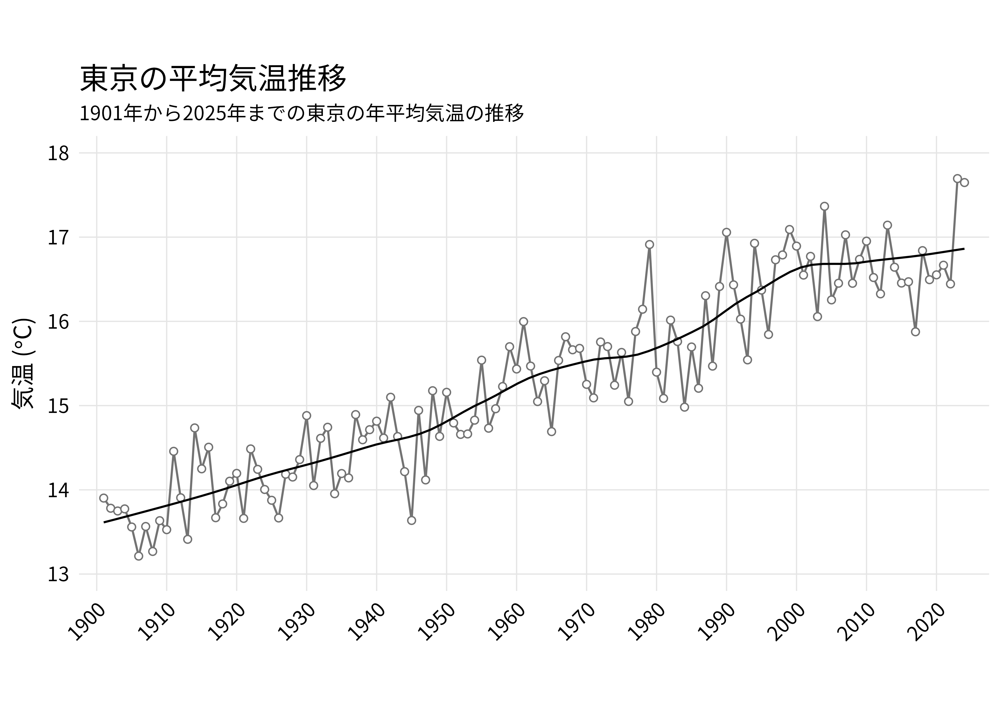

環境 ggplot2
東京都の気温変化
1901年から2025年までの東京都の気温変化をまとめました。
10年ごとの日別平均気温

| 作成日 | 2025-07-23 |
| データ取得日 | 2025-07-23 |
| データ元 | 気象庁 過去の気象データ・ダウンロード |
| 使用したパッケージ | R, ggplot2, bash |
{kind=link}
東京都の年平均気温の推移
1901年から2024年までの東京都の年平均気温の推移です。

| 作成日 | 2025-07-23 |
| データ取得日 | 2025-07-23 |
| データ元 | 気象庁 過去の気象データ・ダウンロード |
| 使用したパッケージ | R, ggplot2, bash |
{kind=link}
Rスクリプト
setwd('~/code/graph/temperature')
library(dplyr)
library(tidyverse)
library(viridis)
library(scales)
data <- read.csv('./data/temp_1901to2025.csv', header=F) %>%
rename('date'='V1', 'temp'='V2') %>%
mutate(ymd = as.Date(date, format='%Y/%m/%d'), year=as.numeric(format(ymd, '%Y')), day=format(ymd, '%m%d')) %>%
mutate(period = case_when(
year >= 1901 & year <=1910 ~ as.factor('1901-1910'),
year >= 1911 & year <=1920 ~ as.factor('1911-1920'),
year >= 1921 & year <=1930 ~ as.factor('1921-1930'),
year >= 1931 & year <=1940 ~ as.factor('1931-1940'),
year >= 1941 & year <=1950 ~ as.factor('1941-1950'),
year >= 1951 & year <=1960 ~ as.factor('1951-1960'),
year >= 1961 & year <=1970 ~ as.factor('1961-1970'),
year >= 1971 & year <=1980 ~ as.factor('1971-1980'),
year >= 1981 & year <=1990 ~ as.factor('1981-1990'),
year >= 1991 & year <=2000 ~ as.factor('1991-2000'),
year >= 2001 & year <=2010 ~ as.factor('2001-2010'),
year >= 2011 & year <=2020 ~ as.factor('2011-2020'),
year >= 2021 & year <=2030 ~ as.factor('2021-2025')
)
)
sumdata <- data %>%
select(temp,day,period) %>%
group_by(period,day) %>%
summarize(meantemp=mean(temp)) %>%
mutate(day=as.Date(day, format='%m%d'))
temp_plot <-
ggplot(sumdata, aes(x=day, y=meantemp, group=period, color=period)) +
geom_line(aes(x=day, y=meantemp, group=period, color=period))
## 装飾
library(RColorBrewer)
#library(extrafont)
#font_import()
#loadfonts()
hight <- -1.3
annotatesize = 4.5
temp_plot <- temp_plot +
scale_color_viridis_d(option='H') +
annotate("text", x=as.Date("2025-01-15"), y=hight, , hjust=.5, label="1月", family='Noto Sans JP', size=annotatesize) +
annotate("text", x=as.Date("2025-02-15"), y=hight, , hjust=.5, label="2月", family='Noto Sans JP', size=annotatesize) +
annotate("text", x=as.Date("2025-03-15"), y=hight, , hjust=.5, label="3月", family='Noto Sans JP', size=annotatesize) +
annotate("text", x=as.Date("2025-04-15"), y=hight, , hjust=.5, label="4月", family='Noto Sans JP', size=annotatesize) +
annotate("text", x=as.Date("2025-05-15"), y=hight, , hjust=.5, label="5月", family='Noto Sans JP', size=annotatesize) +
annotate("text", x=as.Date("2025-06-15"), y=hight, , hjust=.5, label="6月", family='Noto Sans JP', size=annotatesize) +
annotate("text", x=as.Date("2025-07-15"), y=hight, , hjust=.5, label="7月", family='Noto Sans JP', size=annotatesize) +
annotate("text", x=as.Date("2025-08-15"), y=hight, , hjust=.5, label="8月", family='Noto Sans JP', size=annotatesize) +
annotate("text", x=as.Date("2025-09-15"), y=hight, , hjust=.5, label="9月", family='Noto Sans JP', size=annotatesize) +
annotate("text", x=as.Date("2025-10-15"), y=hight, , hjust=.5, label="10月", family='Noto Sans JP', size=annotatesize) +
annotate("text", x=as.Date("2025-11-15"), y=hight, , hjust=.5, label="11月", family='Noto Sans JP', size=annotatesize) +
annotate("text", x=as.Date("2025-12-15"), y=hight, , hjust=.5, label="12月", family='Noto Sans JP', size=annotatesize) +
scale_x_date(date_breaks = '1 month',
#date_labels = "%b",
expand=c(0.01,0),
) +
labs(
title = '10年ごとの日別平均気温',
subtitle = '1901年から2025年までの日別平均気温を10年ごとにまとめています。',
y = expression(paste("気温 (",degree*C,")"))
) +
scale_y_continuous(limits=c(-2, 31), expand=c(0,0), breaks=c(seq(0,35,5))) +
theme(
## テキストの設定
plot.title = element_text(family = "sans", size = 15, color="black", hjust = 0),
plot.subtitle = element_text(family = "sans", size = 10, color="black", hjust = 0),
axis.title.x = element_blank(),
axis.title.y = element_text(family = "sans", size = 13, color="black", hjust = 0.5),
axis.text.x = element_blank(),
axis.text.y = element_text(family = "sans", size = 12, color="black", hjust = 0.5),
axis.ticks.x = element_blank(),
axis.ticks.y = element_blank(),
## 枠・目盛りの設定
legend.title = element_blank(),
panel.grid.major = element_line(color = "gray90"),
panel.grid.minor = element_blank(),
panel.background = element_rect(fill = "white",color = NA),
aspect.ratio=.6
)
ggsave(file = sprintf("./png/temp.png"), plot=temp_plot, dpi = 600, width = 8, height = 5)setwd('~/code/graph/temperature')
library(dplyr)
library(tidyverse)
library(viridis)
library(scales)
data <- read.csv('./data/temp_1901to2025.csv', header=F) %>%
rename('date'='V1', 'temp'='V2') %>%
mutate(ymd = as.Date(date, format='%Y/%m/%d'), year=as.numeric(format(ymd, '%Y')))
sumdata <- data %>%
select(temp,year) %>%
group_by(year) %>%
summarize(meantemp=mean(temp, na.rm = TRUE))
sumdata <- filter(sumdata,year!='2025')
temp_barplot <-
ggplot(sumdata, aes(x=year, y=meantemp)) +
geom_line(color='grey45') +
geom_point(shape=21, color='gray45', fill='white') +
geom_smooth(method = "loess", se=FALSE, color='black', linewidth=.5, span = .4)
## 装飾
temp_barplot <- temp_barplot +
labs(
title = '東京の平均気温推移',
subtitle = '1901年から2025年までの東京の年平均気温の推移',
y = expression(paste("気温 (",degree*C,")"))
) +
scale_x_continuous(limits=c(1900,2025), expand=c(0.02,0.02), breaks=c(seq(1900,2050,10)))+
scale_y_continuous(limits=c(12.8, 18.2), expand=c(0,0), breaks=c(seq(0,20,1))) +
theme(
## テキストの設定
plot.title = element_text(family = 'Ubuntu Mono', size = 15, color="black", hjust = 0),
plot.subtitle = element_text(family = "Noto sans JP", size = 10, color="black", hjust = 0),
axis.title.x = element_blank(),
axis.title.y = element_text(family = "Noto sans JP", size = 12, color="black", hjust = 0.5),
axis.text.x = element_text(family = "Noto sans JP", size = 10, color="black", angle = 45, hjust = 1),
axis.text.y = element_text(family = "Noto sans JP", size = 10, color="black", hjust = 0.5),
axis.ticks.x = element_blank(),
axis.ticks.y = element_blank(),
## 枠・目盛りの設定
legend.title = element_blank(),
panel.grid.major = element_line(color = "gray90", linewidth = 0.3),
panel.grid.minor = element_blank(),
panel.background = element_rect(fill = "white",color = NA),
aspect.ratio=.5
)
#temp_barplot
ggsave(file = sprintf("./png/temp_barplot_jp.png"), plot=temp_barplot, dpi = 600, width = 7, height = 5)
#library(png)
#img <- readPNG('./png/temp_barplot.png')
#grid::grid.raster(img)
temp_barplot_en <- temp_barplot +
labs(
title = 'Annual average temperature trends in Tokyo',
subtitle = 'Changes in Tokyo\'s average annual temperature from 1901 to 2025',
y = expression(paste("Temperature (",degree*C,")"))
) +
scale_x_continuous(limits=c(1900,2025), expand=c(0.02,0.02), breaks=c(seq(1900,2050,10)))+
scale_y_continuous(limits=c(12.8, 18.2), expand=c(0,0), breaks=c(seq(0,20,1))) +
theme(
## テキストの設定
plot.title = element_text(family = 'Ubuntu Mono', size = 15, color="black", hjust = 0),
plot.subtitle = element_text(family = "Ubuntu Mono", size = 10, color="black", hjust = 0),
axis.title.x = element_blank(),
axis.title.y = element_text(family = "Ubuntu Mono", size = 12, color="black", hjust = 0.5),
axis.text.x = element_text(family = "Ubuntu Mono", size = 10, color="black", angle = 45, hjust = 1),
axis.text.y = element_text(family = "Ubuntu Mono", size = 10, color="black", hjust = 0.5),
axis.ticks.x = element_blank(),
axis.ticks.y = element_blank(),
## 枠・目盛りの設定
legend.title = element_blank(),
panel.grid.major = element_line(color = "gray90", linewidth = 0.3),
panel.grid.minor = element_blank(),
panel.background = element_rect(fill = "white",color = NA),
aspect.ratio=.5
)
ggsave(file = sprintf("./png/temp_barplot_en.png"), plot=temp_barplot_en, dpi = 600, width = 7, height = 5)